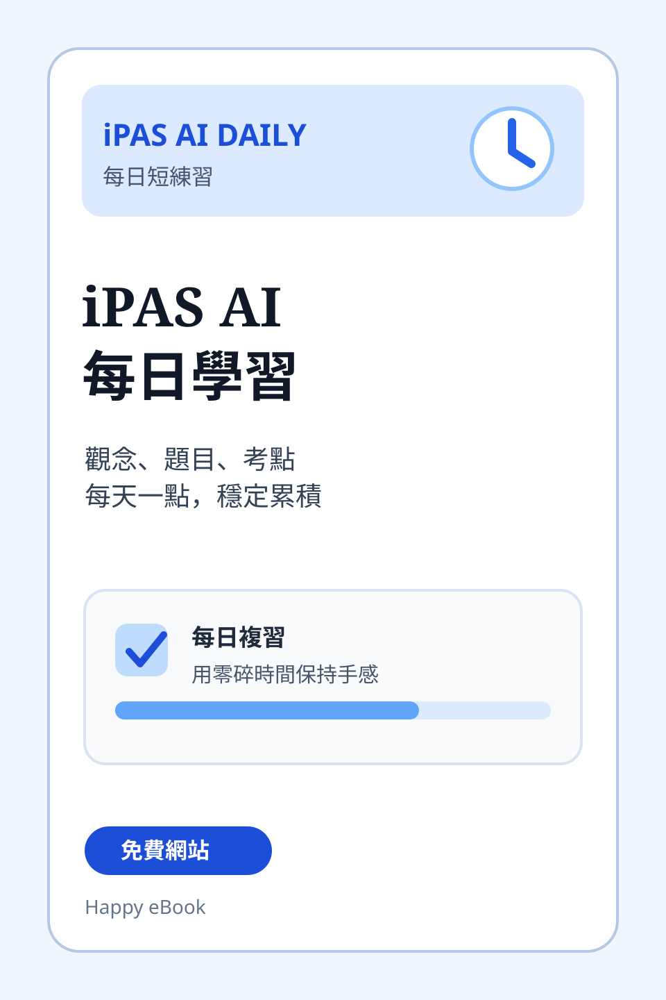

網站教材
iPAS AI 每日學習
每天用短時間複習 iPAS AI 觀念、題目與考點

網站教材免費網站iPAS AI / AI 學習 / 考試準備
iPAS AI 每日學習
適合用零碎時間建立 iPAS AI 複習節奏。
iPAS AI 每日學習是一個適合考前複習與平日累積的外部學習入口。它把 iPAS AI 應用規劃師相關觀念、題目與常見考點整理成短時間可以完成的每日練習。
這個入口適合正在準備 iPAS AI 證照、想建立固定複習節奏，或希望用通勤、課間與睡前時間保持手感的學生、教師與自學者。
Happy eBook 會把這類網站教材與電子書內容放在同一個學習脈絡中，讓讀者可以從白話觀念、實作練習到考前複習，一步一步建立 AI 應用能力。